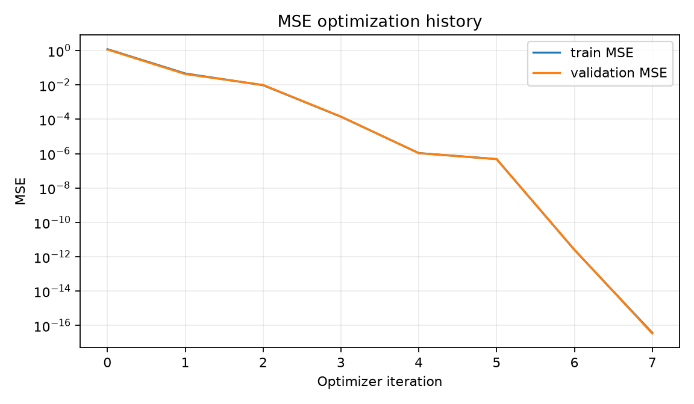
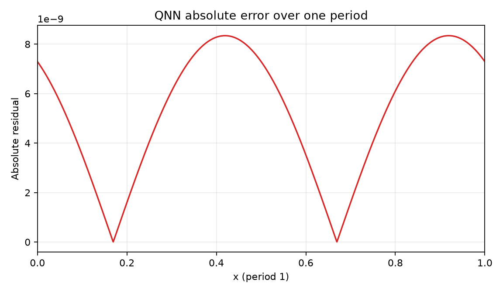
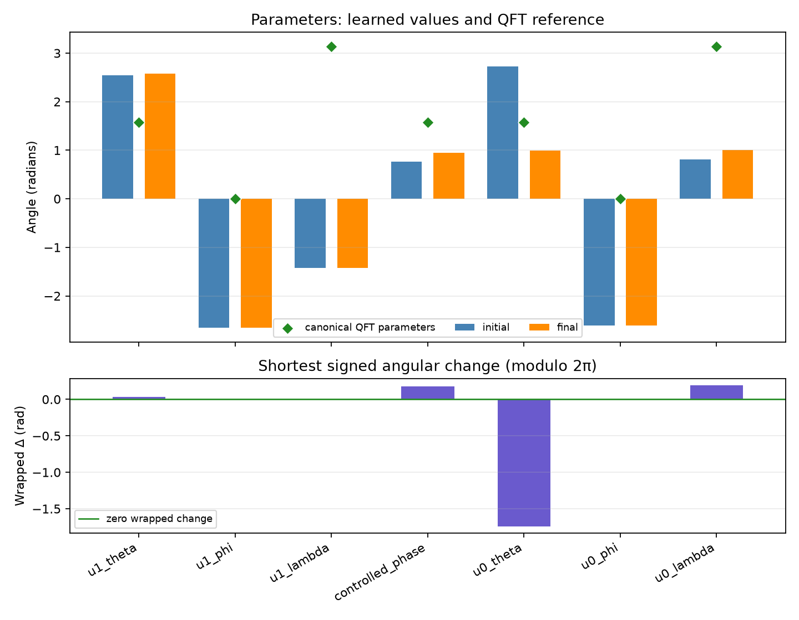

Comparison group: periodic-function-mse-zero-offset-multidataset-ry-angle-encoding-z1-readout
Training loss: MSE only; no Frobenius/process-fidelity term or PINN residual.
Encoding: RY(2πx)|0⟩ on qubit 0, x∈[0,1), period 1.
Readout: ideal Pauli-Z expectation on qubit 1.
Absolute error over one period: mean=5.31116e-09, max=8.34274e-09; defined pointwise as |QNN prediction − target| on the 2048-point periodic grid.
{
"run_id": "20261017T014016306678Z_periodic-function-mse-zero-offset-multidataset_seed-0046_08a24406",
"status": "FINISHED",
"comparison_group": "periodic-function-mse-zero-offset-multidataset-ry-angle-encoding-z1-readout",
"protocol_version": "0.1.0",
"objective": "training-set mean squared error only",
"loss_excludes": [
"process fidelity",
"Frobenius/unitary alignment",
"PINN/physics residual",
"frequency labels"
],
"encoding": "RY(2*pi*x)|0> on q0; x in [0,1), period 1",
"ansatz": "qft2_trainable_u_cp_u_swap",
"readout": "Pauli-Z expectation on q1",
"seed": 46,
"data_seed": 20261016,
"optimizer": "L-BFGS-B",
"iterations": 7,
"function_evaluations": 80,
"optimizer_success": true,
"optimizer_message": "CONVERGENCE: NORM OF PROJECTED GRADIENT <= PGTOL",
"elapsed_seconds": 0.0779395139979897,
"initial_train_mse": 1.2038738005787057,
"final_train_mse": 3.7283871214175963e-17,
"validation_mse": 3.407513018099174e-17,
"test": {
"mse": 3.463525769380391e-17,
"rmse": 5.885172698723795e-09,
"r2": 0.9999999999999998
},
"constant_baseline_test": {
"mse": 0.18484536149470893,
"rmse": 0.42993646216006026,
"r2": -0.0011909118573443234
},
"known_frequency_fourier_baseline_test": {
"mse": 8.130574251659845e-32,
"rmse": 2.8514161835235217e-16,
"r2": 1.0
},
"spectral_coefficient_mse_k0_to_16": 1.0235496384998807e-18,
"dense_grid_absolute_error_mae": 5.311156545513779e-09,
"dense_grid_absolute_error_max": 8.342741275590981e-09,
"target_peak_frequency": 1,
"predicted_peak_frequency": 1,
"frequency_peak_correct": true,
"qft_process_fidelity_diagnostic_only": 0.0039179990038944,
"initial_qft_process_fidelity_diagnostic_only": 0.033182246779634494
}




